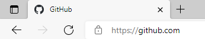
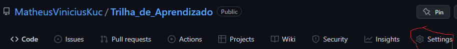
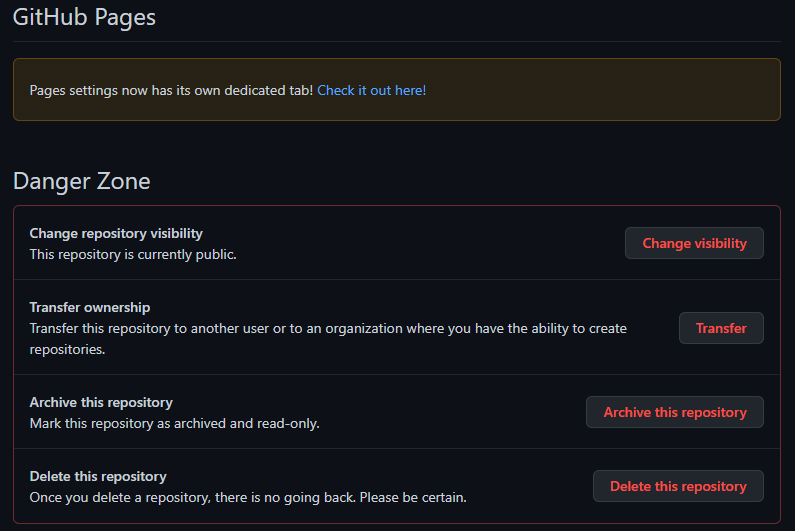
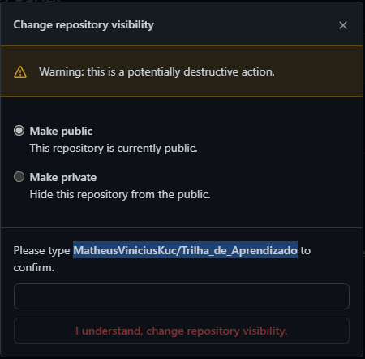
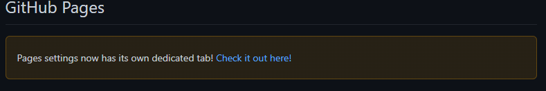
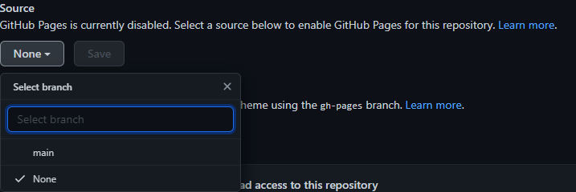

Todo projeto tem seu braço principal que no caso seria a branche main, mas tem como criar outros braços em paralelo para fazer alterações sem mexer diretamente na estrutura main. Isso é muito bom por causa que se uma pessoa ta usando um site e do nada surge uma atualização feita direta da branche main iria causar algum bug no site.
Se vai ir em 'Current branch' e em 'New branch' e por fim da o nome a sua branch e publique no site do GitHub.


E logo após isso você vai ter que selecionar a branch secundária para poder começar a usa-lá, e por fim para realmente comçar a mexer nela você vai abrir o seu visualstudio com a branch secundária.
Primeiro você vai em 'Branch', depois 'Merge into current branch', e por fim você finaliza selecionando a branche que você vai fazer a junção.


Quando você tem bastante branches secundárias e depois coloca tudo na branche principal as outras branches não recebem a atualização nelas do conteúdo novo e por isso precisa ser feito isso aqui.

Para hospedar sites de graça precisa que seu repositorio seja público e que esteja no site do GitHub.
Para começar voce precisa acessar o site da github:
Depois você acha o repositorio que você quer criar sua hospedagem e clica para abri-ló. Logo após isso clique em 'Settings'.
Role a pagina até achar 'GitHub Pages' bem no final, mas antes disso confira se seu repositorio está público, se não estiver mude ali no final em 'Danger Zone'
 Você digita o que ele pede para poder trocar de privado para público se você estiver no privado.
Continuando a parte de hospedagem você clica nesta parte em azul.
E para finalizar essa parte você vai em 'Source' e naquele campo em nome clica nele e seleciona a branche main e depois so clicar em salvar.
E pronto finalmente esse é este link de hospedagem do seu repositorio, se não estiver carregando já em seguido do que você fez os passos é só esperar mais um pouco de tempo que ele já resolve e abre normalmente.